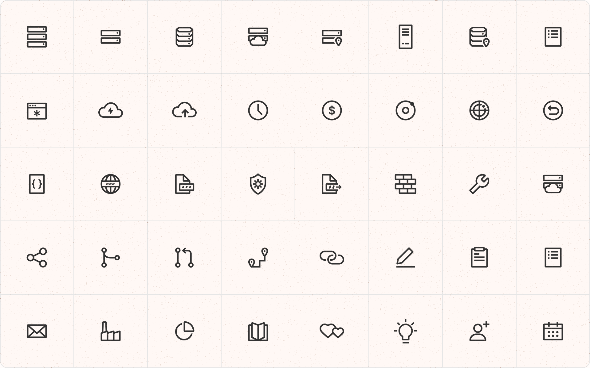
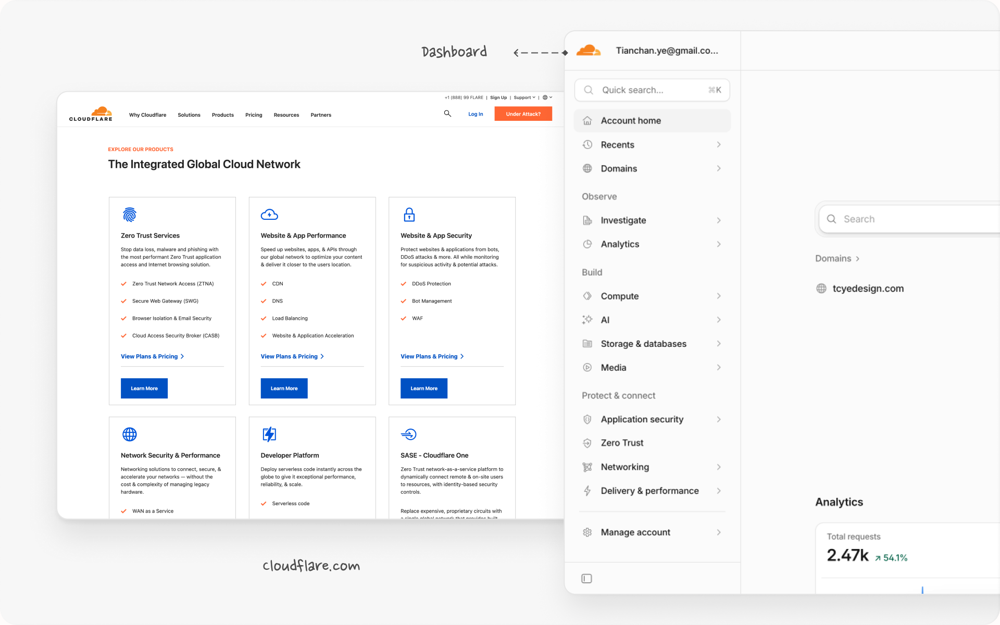
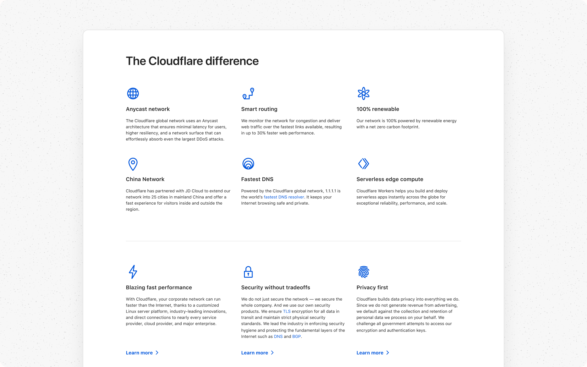
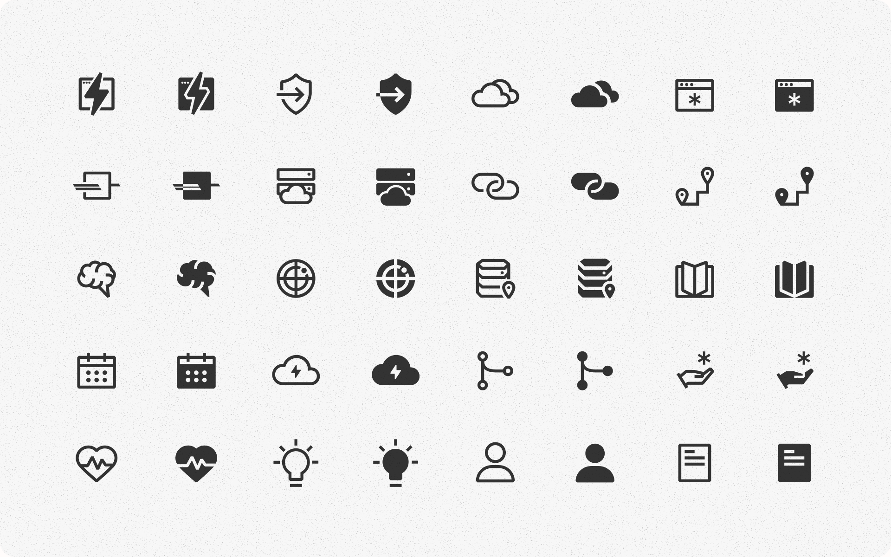
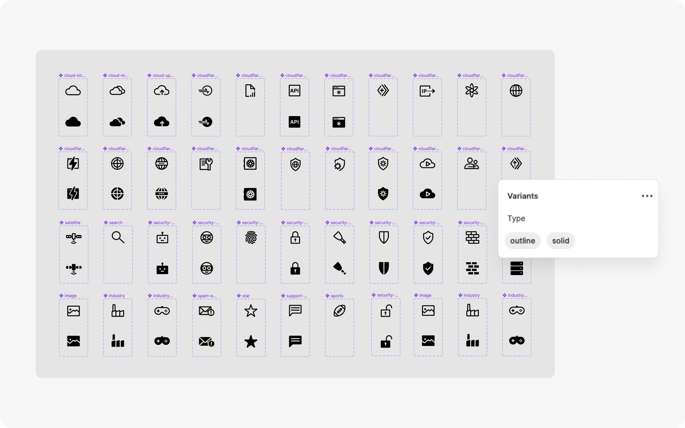
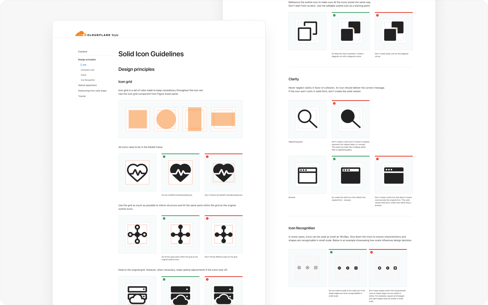
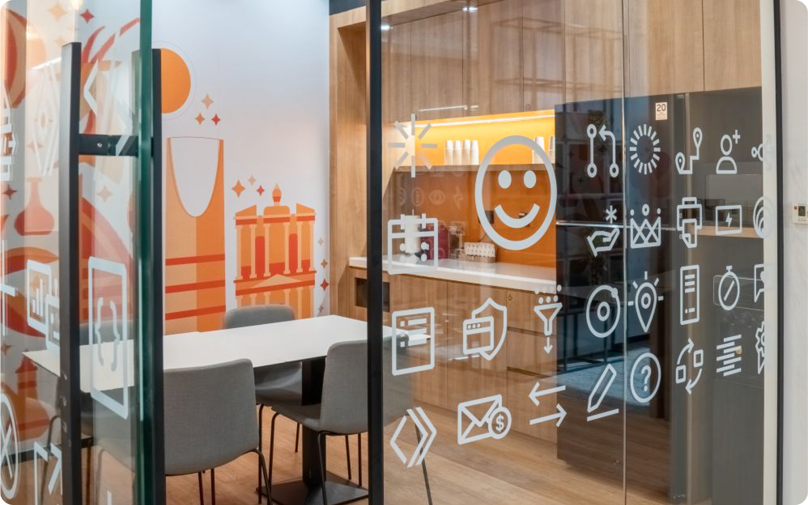

Global Icon System
Building a Shared Source of Truth: I created a unified icon system to bring product and brand teams together under one shared visual language. Designed for everything from product dashboards and websites to marketing campaigns and physical spaces, this system has stood the test of time and is still actively used across Cloudflare today—6 years later.

- Team

- UI Designer (me)
Creative director: Allati El Henson - Timeline
- 2021-2022
- Scope
- Icon strategy & craft
Centralized icon library in Figma
Guidelines and workshop
Making Technical Concepts Simple
Designed custom product logos and icons to make complex technical concepts feel simple, visual, and easy to understand at a glance.



Building a Centralized Library in Figma
Migrated 100+ icon assets and creation process from Adobe Illustrator to Figma. Giving multiple teams across the entire company a single, trusted place to grab and use and contribute to the assets. Created a collection of classic icon logos, along with outlined and filled icon styles, supported by clear usage guidelines so every design feels consistent.

Teaching & Scaling Together
Streamlined how new icons get added, created easy-to-follow guidelines, and hosted hands-on workshops to empower both product and brand designers to contribute together.

Icon in Cloudflare’s Office

You reached the end!
Next Up: